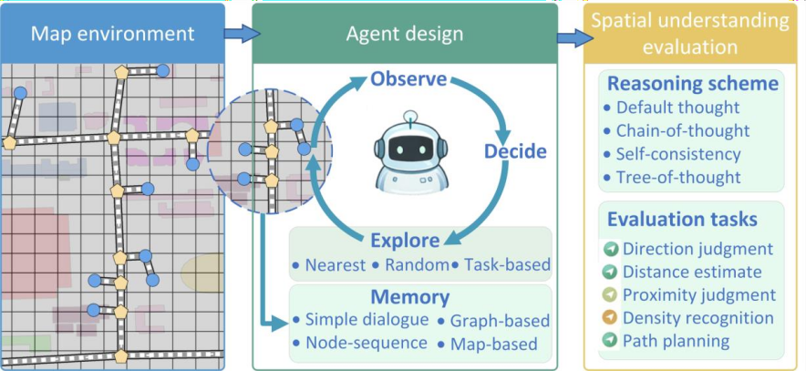

Thinking on Maps: How Foundation Model Agents Explore, Remember, and Reason Map Environments
Map environments provide a fundamental medium for representing spatial structure and supporting navigation, planning, and geographic analysis. Understanding how foundation model (FM) agents acquire, consolidate, and utilize spatial knowledge in such environments is therefore critical for enabling reliable map-based reasoning and applications. However, most existing evaluations of spatial ability in FMs rely on static map inputs or text-based queries, overlooking the interactive and experience-driven nature of spatial understanding. As a result, the mechanisms through which spatial knowledge emerges during exploration and is later leveraged for reasoning remain insufficiently understood.

SCSA-Bench
A standardized benchmark for spatial cognition: direction, distance, routes, landmarks, and more.
Multi-model matrix
Multiple providers with an extensible adapter design for fair comparison and reproducibility.
Memory variants
Raw/context/graph/map representations to study how memory affects reasoning and exploration.
Real regions
Multi-city datasets with POIs and road networks for batch exploration, offline evaluation, and statistics.